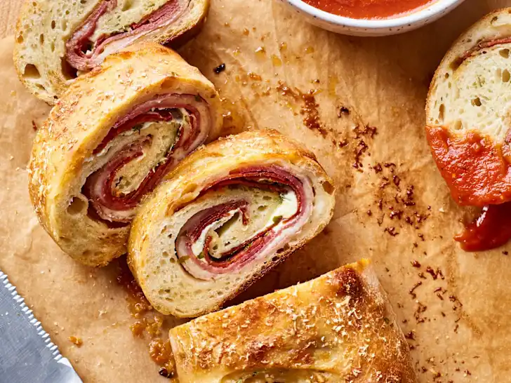
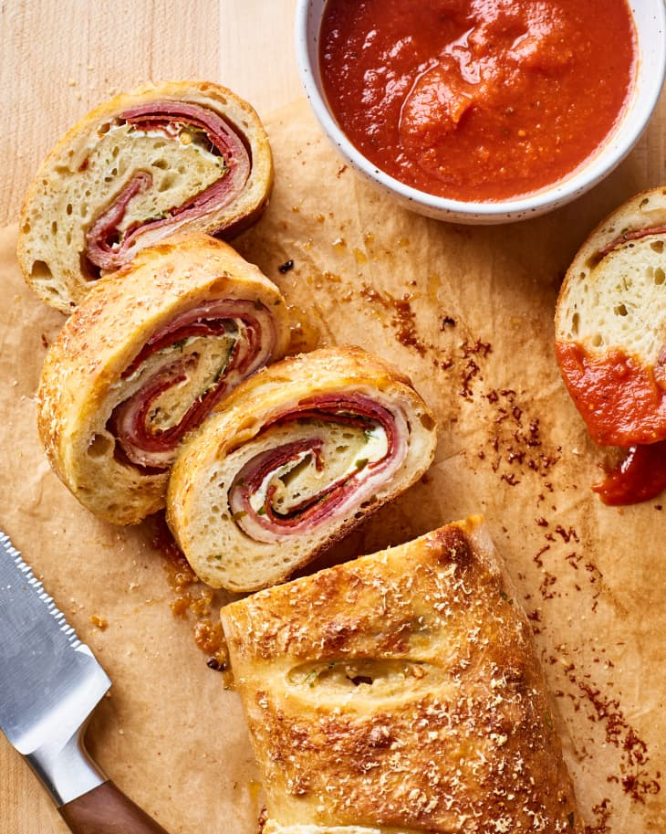

Easy Stromboli

This family-favorite boasts a crisp golden exterior filled with three kinds of cured meat and just as many cheeses.
Why You’ll Love It
- It’s a family-favorite. Stromboli is one of the all-time best, most satisfying midweek choices for hungry families.
- It’s easy to make with a grocery shortcut. This recipe hits all the high notes of stromboli – layers of meat and cheese – with the ease of a grocery store shortcut in the pizza dough.

Key Ingredients in Stromboli
- Pizza dough: Use homemade or store-bought pizza dough, at room temperature
- Cured meat: A combination of thinly sliced prosciutto, genoa salami, and pepperoni slices adds layers of flavor.
- Cheese: Use a combination of thinly sliced provolone cheese, grated Parmesan cheese, and torn fresh mozzarella cheese.
- Egg: Brush the top edge of the pizza dough with some beaten egg before sealing, as well as the outside of the stromboli before sprinkling with more Parmesan cheese.
How to Make Stromboli
- Bring the dough to room temperature. You’ll want to take the chill off your refrigerated or frozen pizza dough before rolling out the dough, which will make it more relaxed and easier to work with. If it’s frozen, thaw it in the refrigerator overnight, then bring the refrigerated dough to room temperature on the counter at least 30 minutes before you start assembling.
- Alternate between meat and cheese layers. Once you’ve rolled your dough ball into a large rectangle, it’s best to layer the meats and cheeses by alternating them. This order prevents the meat layers from slipping around when you roll up the stromboli.
- Roll, tuck, then roll again. The two or three minutes of rolling up this stromboli might seem stressful the first time you do it, but remember it doesn’t need to be perfect. Roll the rectangle about half way, then stop, tuck in the outer edges — like you would a burrito — and keep rolling.
- Bake seam-side down with vent holes on top. Your ultimate goal when rolling is to land the spiral with the seam side down so you can easily transfer it to the baking sheet. Before baking, make 4 to 5 vents in the top with a sharp knife. These will likely cut through the dough to the first layer of meat, and that’s fine.
Back to the odin project Homepage